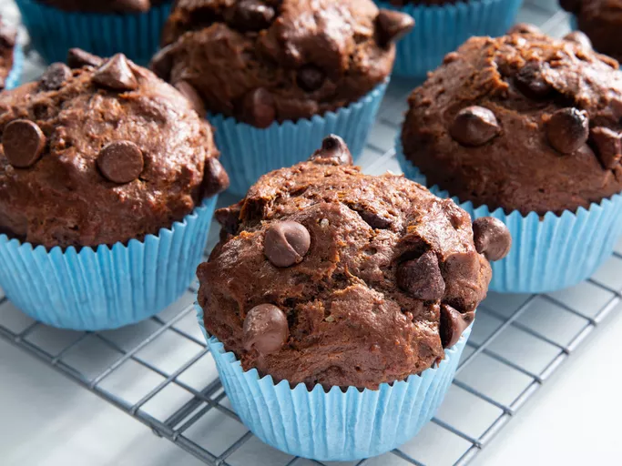

Chocolate Muffins

Description
These tasty chocolate muffins are scrumptious! Yogurt in the batter keeps them super moist while cocoa powder and chocolate chips add a huge dose of chocolaty goodness. They're even better the next day.
Ingredients
- flour
- 1 cup sugar
- ½ cup cocoa powder
- 1 cup chocolate chips
- 1 teaspoon baking soda
- yogurt
- milk
- vegetable or canola oil
- 1 egg
- 1 teaspoon vanilla extract
Steps
- Mix the dry ingredients (flour, sugar, 3/4 cup chocolate chips, cocoa powder, and baking soda) in one bowl and the wet ingredients (yogurt, milk, oil, egg, and vanilla) in another. Pour the yogurt mixture into the flour mixture, then stir until smooth.
- Prepare a muffin tin with muffin liners. Fill the liners about ¾ full, then sprinkle the remaining chocolate chips over the top.
- Bake in a preheated oven until a toothpick inserted into the center comes out clean. Cool in the pan for about 10 minutes, then transfer to a wire rack to cool completely.